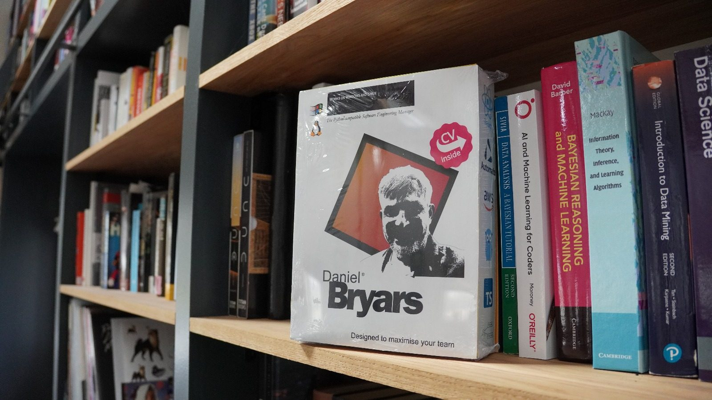
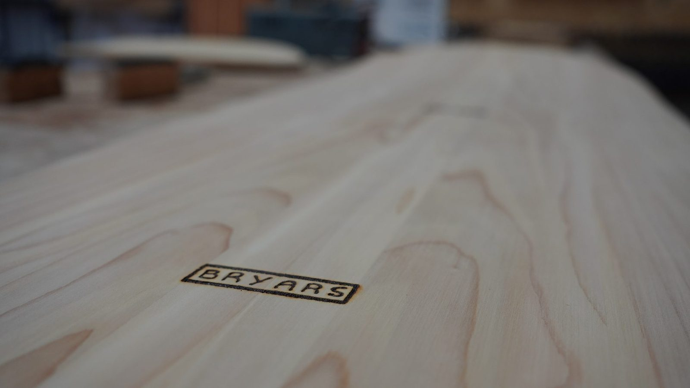

Robot Arm
Somewhere to run policies trained in MuJoCo and find out where the simulator and the hardware disagree. Printed cycloidal joints, servo drives, a bus and a lot of wiring.
Open projectProjects
Robots, vehicles, furniture, electronics, simulations, retro computing experiments and workshop archaeology.
Written up
Somewhere to run policies trained in MuJoCo and find out where the simulator and the hardware disagree. Printed cycloidal joints, servo drives, a bus and a lot of wiring.
Open project
After twenty-odd years of building production systems I went back and did the maths properly. Nine taught modules, from knowledge representation to reinforcement learning, and a dissertation on robot learning.
Open project
Curved weathering steel for the terrace edge, checked with FEA before cutting anything expensive, then left to weather.
Open project
I wanted to know whether a CV people pick up beats a CV people skim, so I packaged myself like a 1990s software product.
Open project
An electric trike built to go sideways. Steel frame, 72V battery, controller wiring and a lot of welding.
Open project
A wall of books, built in sections around an existing window. Then it needed a rolling ladder, which became its own project with machining and welding in it.
Open project
A way upstairs without taking up the whole courtyard. Curved steel, fitted around a building that was already there and not square.
Open project
I built a house with curved walls, so the skirting board had to be steam-bent to follow them.
Open project
A height-adjustable desk built with my son, mostly as an excuse to spend a day in the workshop with him.
Open project

An Original Prusa MK4 kit, built over Christmas. It now makes parts for most of the other projects on this page.
Open project
Shop-bought lighting would have lit the room. I wanted it to feel like somewhere specific, so: twisted cable, warm filament bulbs and made fittings.
Open project
Final-year Mechatronics project from Leeds: a robotic chessboard, hand-wound electromagnets and report scans from 1997.
Open project
SEAS drivers, Hypex FA503 amps, FreeCAD cabinet work, measurement sweeps and a wireless volume knob that is not finished yet.
Open project
Won a competition, spent the prize on a day course shaping a wooden belly board in Cornwall.
Open projectOn the pile